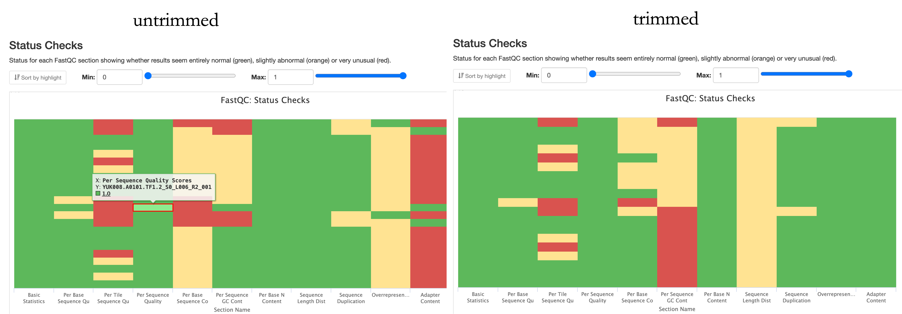

Quality Control
Your data has made it through the sequencer, now you want to know: am I good?
There are several ways to assess if you got what you payed for, and if your hopes to have a project with this data aren’t crushed. This chapter will walk you through how to check your sequencing went well, assess the quality of your data, what you can do if something is off, and how to decide what to do next.
Your data has been sequenced, and you have run nf-core/eager to get the statistics. Now you can use the information to have a quick check if everything went well, and decide how to continue. First, let’s assess if everything went well in the sequencing. Runs can fail because the flow cells are faulty, expired or human mistakes were made in setting up the sequencing run. Severe problems affecting an entire run are usually already caught by the lab, but sometimes minor problems/mistakes affect single samples, and they can affect your downstream analysis/assessment of the statistics.
In your sequencing request, you will have asked for a certain amount of reads to be sequenced (i.e. 5-10 M reads for shotgun sequencing, 40M for Capture, 100M for shotgun genomes). This is the amount of reads you should expect from the “Nr. Input Reads” column (the number of reads that was assigned to your sample in demultiplexing the data based on the unique index combination).
In most cases, you should get the requested amounts of reads (summed up over the lanes if the pool was distributed over many), with a little bit more or less, depending on the pipetting accuracy.

However, if you have much less, then you need to trouble shoot. The lack of reads assigned to your library can be a wet-lab problem, or a dry-lab problem. When loading the sequencer, the amount of reads requested is controlled by the pool of samples it is loaded with. If you have much less than what you payed for, or your sample is not among the ones listed in the run, you should check the “unknown.txt” in the folder containing the raw data. Sometimes, typos in the index combination, and your sample was not properly demultiplexed. In this case, check if the unknowns contain sequences with an index combination that is suspiciously close to the one recorded for your library. If this is the case, ask the lab to correct the wrong entry and see that your data is demultiplexed again. If your sample is not among the unknowns, you should reach out to the lab and let them know. The sample migh thave failed because it was not pooled for the sequencing, or the capture might have failed, so there is no data there and the experiments have to be repeated. Sometimes, the wrong sample is drawn for a capture plate, and instead of your library, another lucky person gets some free extra data.
If (close to) all the reads you requested are there, you can go check if those reads are of sound quality. One aspect is the sequencing Quality, another the authenticity and quality of your data.
Part of eager is MultiQC, which contains an array of tools that allow you to assess the quality of your data. Let’s start by assessing the sequencing quality. For this, we can use FastQC - a quality control tool for high throuput data contained in MultiQC. FastQC gives you statistics on various aspects of your data that can help assess the quality, and raises warnings or points out failures of your data clearly colour-coded: Green for “pass”, yellow for “warning”, red for “fail”.
 Nf-core/egaer provides the statistics for untrimmed data, which still contains the adapters, and – if you scroll down - for trimmed data (where adapters are removed). One (me) could argue that the untrimmed is not so relevant, and you might get some confusing alerts that are actually not that terrible and unexpected in untrimmed data. However, there are instances where the comparison of the untrimmed vs. trimmed data might be informative.
Nf-core/egaer provides the statistics for untrimmed data, which still contains the adapters, and – if you scroll down - for trimmed data (where adapters are removed). One (me) could argue that the untrimmed is not so relevant, and you might get some confusing alerts that are actually not that terrible and unexpected in untrimmed data. However, there are instances where the comparison of the untrimmed vs. trimmed data might be informative.
In the interest of conciseness, I will not go through every plot individually to explain what it does, because that is something that the MultiQC report can do. Just click the tiny “Help” button, and you will get a window with an explanation of what the respective statistic shows. If you need more information on a specific field, you can also dive into detail in the FastQC help.

I will point out a few statistics that (I believe) one should check to make sure that the run went ok, and no problems should be expected downstream that are attributable to the sequencing quality.
If you want to be lazy, skip straight to the “Status Checks”. This gives an overall impression through the colour code.

In the untrimmed summary, there are a couple of “red flags” that are expected, like over represented sequences and the adapter content (as they have not yet been removed and are therefore over represented). Should they still be flagged in the “trimmed” summary, one should investigate further.
To assess the quality of the run, you want to watch some statistics closely:
The sequencing quality scores. In the above example, there are two libraries that are marked yellow. This is acceptable, especially because the quality is expected to go down as the run progresses. A closer inspection shows that the two libraries descend into the yellow area only towards the end of the read. Should more libraries fall into the red, or start falling in the middle of the read, you might ask the lab to check the run quality.

I like to go straight for the trimmed ones, and make sure there is no drastic drop in the quality. It is expected to drop into the yellow field towards the end, but should not drop into the red or drop already in the middle of the read.
The Per Sequence Quality Scores should be overall high, but some lower scores can be acceptable.
The Per Base N content, should be low. N is a substitute for when the eqeuncer is unable to confidently identify a base.
If those three are ok, the sequencing run probably was, too.
To assess the structure and quality of your data, and to decide how to continue with your journey in this project a few statistics are enough. But for some specific needs, you might want to check an extended set.
Let’s say we are assessing preservation in a certain set of individuals. You have put your blood sweat and tears into sampling, have seen the glow in the Archaeologists eyes and your hopes are high. Is there something we can work with?
You can determine this essentially with two statistics: The Endogenous DNA Post (%), and the 5Prime C>T1st base columns in the “General Statistics” section of your MultiQC report.

Let’s check damage first. In the “maturing” of DNA to ancient DNA, hydrolytic (catalysed by H2O) processes alter one of the bases (Cytocin) by removing an Amino group (NH3), turning it into Uracil. In the library protocols, Uracil (which in living creatures is only present in RNA) is “misread” as a Thymin, and therefor the synthetization of new strands in the process of library building misincorporates a Thymin, where a Cytosin should be – the famous “C to T misincorporation”. In an authentically ancient library, we expect high levels of this observation (A T where a C is expected) especially towards the end of reads (because DNA strands also tend to break in such deaminated positions, because they have lost some stability). So we want to see a high percentage of C>T substitutions especially in the 1st base of our read. In our example above, this is the case for the first two libraries. Above 30% is great, around 15% is very common, 5% is really low, and our threshold for a “properly damaged” library. When the damage is enzymatically repaired during the library preparation (UDG treatment), we expect much lower levels, but the 5% threshold stands.
Now we know that our library has damage, but does it have enough damaged reads of our target organism (humans?)? This is reflected in the % endogenous DNA, which is the percentage of mapped (to the target reference genome) reads over the total reads that went into the mapping. As the nf-core/eager documentation so nicely puts it “Assuming a perfect ancient sample with no modern contamination, this would be the amount of true ancient DNA in the sample…”
“…However this value most likely include contamination and will not entirely be the true ‘endogenous’ content.”
which is why I recommend to look specifically at the Endogenous DNA Post (%) value. Here, the reads mapping to the target reference also have to pass a certain mapping quality filter (30 is the default in most eager.configs I have seen. This value is NOT provided in the autoprocessing, so when you check that for your data, bear that in mind!). Here, the threshold to consinder the sample preserved enough is 0.05. (previously 0.1). So in our example, we are sorry to inform you that your project is not feasible with the current methods. All individuals are under 0.05%, and it would not be economic or good for your mental health to try and squeeze something out of these libraries for the next 3 years. If you are above 0.05 or even 0.1, congratulations, you can proceed with a targeted enrichment approach that will be also absolutely necessary in this case. If this value is above 30%, you might want to consider even producing a shotgun genome.
When considering a shotgun genome, or when contemplating deeper sequencing of a targeted enriched library, the Sequence Duplication Levels become very relevant. They tell you about the complexity of your library: Low duplication rates promise high levels of coverage, high duplication reads tell you not to expect too much from this library. Schiffels’ law #4 states that if you have more than 25% duplications, then you should stop using the library you are currently squeezing, and produce a new library or ask for another capture.
In some edge cases, the Length Distribution (after trimming) is a relevant statistic to consider. Literature says we should expect authentic ancient DNA to be around 30 -65 bp. But this might be different for pathogens, or for modern DNA that you might have intentionally sampled and treated to be processed with the ancient DNA protocols. A majority of very small fragements can indicate high levels of microbial contamination. A lot of very long reads? Maybe your favourite Archaeologist greets you here. Or an indication you should shear your DNA more when you want to process modern samples and are too cheap to outsource that to a company.
GC-content: can be indicative of contamination, BUT: Since we don’t know the the GC content of the genome the modal GC content is calculated from the observed data and used to build a reference distribution, so it is not a standardized measure across runs, and therefore I don’t pay too much attention/overinterpret this result.